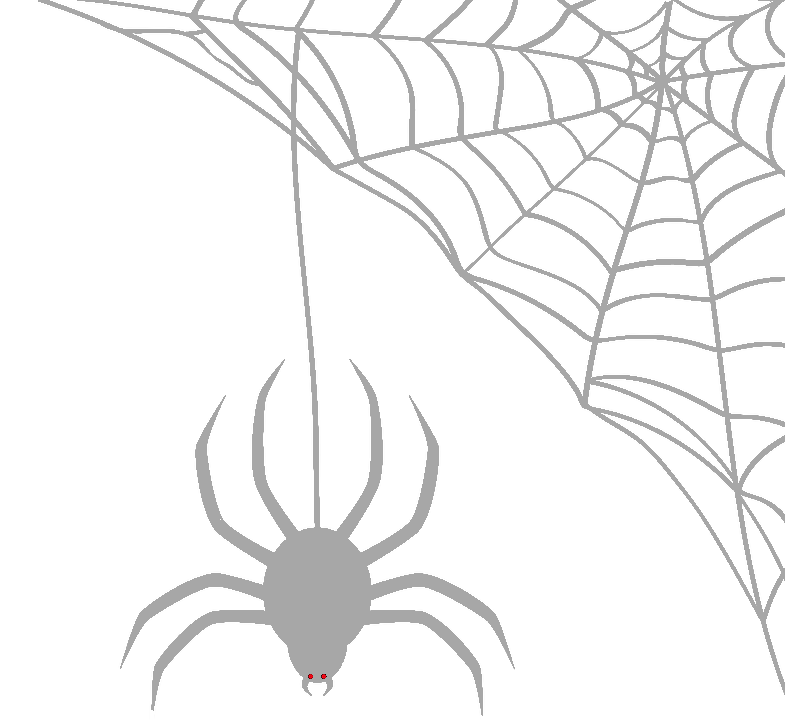

Bienvenido al cementerio de gatitos
Has llegado aquí porque no has aprendido aún que no se dice querella criminal. Querella criminal no existe. Es como pedo del culo. Ya se sabe que es del culo, ya se sabe que es criminal. Fin de la historia.
